DISASTER RESPONSE
If a Government requests and/or accepts external assistance, a variety of international humanitarian actors may be asked to support disaster response and disaster response preparedness, including the UN, RCRC Movement, regional intergovernmental bodies, NGOs, assisting Governments, foreign militaries, and the private sector. Below is a short description of these different categories of international humanitarian actors.
Each category and sub-category of humanitarian actor includes and short description of who it is, what it does and how it works with Governments.
have their membership, leadership and budget processes separate from the UN Secretariat, but they are committed to work with and through the established UN coordination mechanisms and report to the UN Member States through their respective governing boards. The UN agencies, most of which also have pre-existing development-focused relationships with Member States, provide sector-specific support and expertise before, during and after a disaster. The main UN agencies with humanitarian mandates include Food and Agriculture Organization (FAO), International Organization for Migration (IOM), United Nations Development Programme (UNDP), United Nations Populations Fund (UNFPA), UN Refugee Agency (UNHCR), UN-Habitat, United Nations Children’s Fund (UNICEF), UN Women, World Food Programme (WFP) and World Health Organization (WHO). These agencies support a variety of disaster response needs. These include shelter, protection, food security, health, nutrition, education and livelihoods as well as common services like coordination, logistics and telecommunications.
OCHA is the department in the UN Secretariat mandated to support the Emergency Relief Coordinator (ERC) at the global-level, and the UN Resident and/or Humanitarian Coordinator at the country-level Below is a short description of these different categories of international humanitarian actors.
At the country-level, the UN system works in partnership with National Disaster Management Offices (NDMOs) and with respective Government line ministries on emergency response preparedness and response.
The International Red Cross and Red Crescent (RCRC) Movement is the world’s largest humanitarian network, comprising nearly 100 million members, volunteers and supporters in 190 National Societies. Structurally, the RCRC Movement has three core components:
Together, these components operate worldwide. Their mission is to prevent and alleviate human suffering wherever it may be found, to protect life and health, and to ensure respect for human beings, particularly in times of armed conflict and other emergencies. The Movement works in accordance with the fundamental principles of humanity, impartiality, neutrality, independence, voluntary service, unity and universality.
National Red Cross and Red Crescent Societies (National Societies) occupy a unique place as auxiliaries to the public authorities in their countries. They provide disaster relief, support health and social programmes, and promote international humanitarian law and humanitarian values.
National Societies work alongside national and local public authorities in disaster situations. In Asia-Pacific, national societies are generally the first points of contact for Governments requesting additional support from IFRC (in natural disasters) and ICRC (in situations of armed conflict). National societies are not NGOs, so they have a different relationship with Governments and public authorities than registered NGOs.
International Federation of the Red Cross and Red Crescent Societies (IFRC) coordinates and directs assistance in natural disasters in support of the National Society. IFRC and National Societies also undertake preparedness, response and development work activities. These include disaster preparedness, emergency health, disaster law, water and sanitation, and humanitarian diplomacy.
IFRC interfaces with Governments directly and through the National Societies. In a disaster response, IFRC provides leadership in the development of crisis management policies and programming approaches, facilitates Movement coordination and cooperation, and supports operations through Emergency Plans of Actions and resource mobilization efforts. In Asia-Pacific, the IFRC has 10 offices, led from Kuala Lumpur, Malaysia, which support the humanitarian work of 38 National Red Cross and Red Crescent Societies, and which respond each year to more than 40 per cent of the world’s disasters and public health emergencies.
International Committee of the Red Cross (ICRC) is an impartial, neutral and independent organization mandated to protect the lives and dignity of victims of war and other situations of violence. During armed conflict, ICRC is responsible for directing and coordinating the RCRC Movement’s international relief activities. ICRC promotes International Humanitarian Law (IHL) and draws attention to universal humanitarian principles. ICRC has been granted observer status to the UN General Assembly. Its headquarters are in Geneva, Switzerland and it has country and regional offices throughout Asia and the Pacific.
Based on its mandate under the 1949 Geneva Conventions, the ICRC deals directly with Governments. In situations of armed conflict and other situations of violence, the ICRC may coordinate the activities of other components of the RCRC Movement.
In the Asia-Pacific region, there are many intergovernmental organizations that offer humanitarian tools and services to Member States and participating States. Several regional intergovernmental organizations and forums active in emergency preparedness and response are described here (Figure 5):
Association of Southeast Asian Nations (ASEAN) was formed in 1967 following the signing of the ASEAN Declaration by Indonesia, Malaysia, the Philippines, Singapore and Thailand. The aim was to ensure economic, social, cultural, technical and education cooperation, and to promote regional peace and stability through respect for justice and the rule of law and adherence to the principles of the United Nations Charter. Since the early 2000s, ASEAN has increased its focus on and investment in disaster management. This is a result of the high exposure many of its Member States have to natural disasters and their experience of various disasters, including the 2004 Indian Ocean Earthquake and Tsunami disaster and the 2008 Cyclone Nargis in Myanmar. The ASEAN Agreement on Disaster Management and Emergency Response (AADMER), signed in July 2005, is the first legally- binding regional framework in this area.
In late 2015, ASEAN produced its ASEAN Vision 2025 and corresponding ASEAN Vision 2025 on Disaster Management. These set ambitious targets for ASEAN’s forward trajectory on peace and security, economic and socio-cultural issues. It also integrated the organization’s and its Member States’ commitments with international frameworks such as the 2030 Sustainable Development Agenda, Sendai Framework for Disaster Risk Reduction and, by implication, the Paris Agreement on Climate Change Action and World Humanitarian Summit. Following its 2016 Summit, ASEAN also adopted the “One ASEAN One Response” Declaration, which states that, by 2020, ASEAN should be able to “respond to disasters outside the region, where appropriate, in partnership with regional and international agencies and centres.”
The ASEAN Secretariat (ASEC) was set up in 1976 by the Foreign Ministers of ASEAN countries to initiate,facilitate and coordinate ASEAN stakeholder collaboration in order to realise the purposes and principles of ASEAN as reflected in the ASEAN Charter. Its primary role is ensuring greater efficiency in the coordination of ASEAN organs for more effective implementation of ASEAN projects and activities. Within ASEC the Disaster Management and Humanitarian Assistance (DMHA) Division serves as the AADMER secretariat, facilitating and monitoring progress in the implementation of the AADMER and its Work Programme. The Division works closely with relevant ASEAN bodies, in particular the ASEAN Committee on Disaster Management (ACDM), as well as with the AHA Centre, ASEAN Dialogue Partners, the United Nations, civil society partners, the Red Cross and Red Crescent Movement, the private sector, academia, and other entities. The ASEC is located in Jakarta, Indonesia.
As the primary regional coordinating agency in disaster management, the AHA Centre is the first point of contact for ASEAN Member States in the event of a disaster. In the event of large-scale disasters or pandemics, the AHA Centre’s Executive Director assumes the role of ASEAN HAC and coordinates with ASEAN’s Secretary General.
ASEAN Regional Forum (ARF), whose membership extends beyond the 10 ASEAN Member States to include 27 participants, is a platform developed to foster constructive dialogue and consultation on political and security issues of common interest, including cooperation on disaster management. All ARF initiatives and activities abide by the principle of co-chairmanship, whereby each initiative/activity are co-chaired by at least one ASEAN Member State and at least one non-ASEAN ARF member.
The ARF provides a platform for dialogue through a series of annual meetings. The most senior of these is held annually at the Foreign Minister level in conjunction with the ASEAN Foreign Ministers’ Meeting and Post Ministerial Conference.
East Asia Summit (EAS) is a regional forum for dialogue on broad strategic, political and economic issues of common interest and concern. It brings together the leaders of the 10 ASEAN Member States, as well as Australia, China, Japan, India, Korea, New Zealand, Russian Federation and the United States. Disaster response and humanitarian assistance are among the wide range of regional concerns covered by the EAS agenda.
As an intergovernmental forum, the EAS meets at the Head of State level each year following the annual ASEAN leaders’ meeting, but it does not have a permanent secretariat entity. Agreed initiatives may be carried out by EAS members on behalf of the forum, such as the EAS Rapid Disaster Response Toolkit developed by Emergency Management Australia and Indonesia’s National Agency for Disaster Management (BNPB) in collaboration with the NDMOs of the 18 EAS participating countries and in consultation with the ACDM.
South Asian Association for Regional Cooperation (SAARC) was established in 1985 and comprises eight Member States: Afghanistan, Bangladesh, Bhutan, India, Maldives, Nepal, Pakistan and Sri Lanka. SAARC’s objectives, as laid out in its Charter, include promoting the welfare of the peoples of South Asia and improving their quality of life; accelerating economic growth, social progress and cultural development in the region; promoting and strengthening collective self-reliance; and promoting active collaboration and mutual assistance in economic, social, cultural, technical and scientific fields. SAARC’s identified areas of cooperation include Environment, Natural Disasters and Biotechnology. SAARC’s humanitarian architecture, comprised of the Disaster Management Centre (SDMC) and the SAARC Agreement on Rapid Response to Natural Disasters, was signed in November 2011.
Pacific Islands Forum (PIF) is an international organization established by treaty with 16 Member States across the Pacific region. The PIF is mandated to stimulate economic growth and enhance political governance and security for the region through the provision of policy advice. Additionally, it is mandated to strengthen regional cooperation and integration by coordinating, monitoring and evaluating the implementation of leaders’ decisions. The PIF secretariat is in Suva, Fiji.
PIF holds an annual meeting at Head of Government level, followed by a Post Forum Dialogue with key Government partners. Discussions include disaster response and disaster response preparedness.
Pacific Community (SPC) supports the 22 Pacific Island countries and territories by addressing the risks posed by climate vulnerability and natural disasters. PC is engaged in all sciences concerned with the Earth, including geological, physical, chemical and biological processes. The PC organizes its work according to three technical programme areas: oceans and islands; water and sanitation; and disaster reduction. Its headquarters are in Suva, Fiji.
Although not involved in disaster response, the PC provides Member States with basic geological knowledge to support their disaster response preparedness capabilities.
Asia-Pacific Economic Cooperation (APEC) is a forum of 21 Pacific Rim economies promoting free trade and economic cooperation. The APEC Emergency Preparedness Working Group (EPWG) coordinates and facilitates emergency and disaster preparedness within APEC. The EPWG is focused on reducing the risk of disasters and building business and community resilience through capacity building, information exchange, knowledge sharing and collaboration among its 21-member economies. In 2015, APEC Leaders adopted the APEC Disaster Reduction Risk Framework to address concerns resulting from the persistence of disasters in Asia-Pacific Region.
The APEC Emergency Preparedness Working Group is co-chaired by two-member economies for two years and meets three times a year, including once with the heads of NDMOs. It holds additional workshops as required.
In 2015, the United Nations General Assembly called for strengthening cooperation between the UN and regional and sub-regional organizations via frameworks reflecting the comparative advantages of the UN and regional organizations. It also called for the need to institutionalise and consolidate the interdependence into policy.
Regional organizations are increasingly active in humanitarian action, working to mobilize their membership to support the Government of an affected member state. One of the most advanced regional organizations in this regard is ASEAN.
Since 2011, ASEAN and the UN have elaborated their cooperation on disaster management through the ASEAN-UN Joint Strategic Plan of Action on Disaster Management (JSPADM). The JSPADM outlines the mutual intentions and commitments of participating ASEAN and UN entities and agencies, and is guided by the strategies and priorities incorporated by ASEAN in its AADMER Work Programme. The current iteration of the JSPADM, which covers the period 2016-2020, is organized according to the eight priority programmes included in the AADMER Work Programme (2016-2020).
A practical example of ASEAN-UN interoperability under the JSPADM is the work undertaken by ASEAN and OCHA on response coordination. At the strategic level, OCHA and ASEAN’s joint commitment to humanitarian advocacy, coordination, planning and financing have been codified through development and agreement of an Interoperability Brief that details how the ASEAN Secretary-General, when acting as the ASEAN Humanitarian Assistance Coordinator (AHAC), and the United Nations ERC and their respective offices will work together during and in between major disaster responses.
At the operational level, OCHA and the AHA Centre are also working to enhance interoperability between deployable international and regional response mechanisms, such as the UNDAC and ERAT teams, and the coordination platforms that they establish and support, the OSOCC and JOCCA. Thus, UNDAC and ERAT regularly participate in joint simulation exercises and training to test their interoperability in terms of coordination, assessment, information sharing, and response planning. Building on this practical experience, OCHA and AHA Centre have developed a set of standard operating procedures (SOPs) for the UNDAC and ERAT systems, for use in training team members and to guide their interaction during response.
Civil-society actors can be divided into two categories: national and community-based non-governmental organizations (NGOs) and international NGOs (INGOs). In addition to their independent relationships with Governments, NGOs assemble themselves according to networks and consortia on global, regional and national or sub-national levels.
National and community-based NGOs are civil-society organizations that function within the national borders of their home country. These NGOs, often in partnership with UN agencies and larger international NGOs, support the emergency preparedness and response activities of communities and national Governments. They generally possess strong community-based networks that are critical for reaching disaster-affected communities. National NGOs are officially registered as national organizations with their host Governments and can be either secular or faith-based entities.
International NGOs operating in emergency preparedness and response include humanitarian and multi-mandated organizations that work independently to provide humanitarian assistance. The largest international NGOs, in terms of annual expenditure, are generally based in North America and Europe, and have regional and country offices across Asia and the Pacific and other parts of the world. There are also a growing number of NGOs based in Asia and the Pacific with programmes of international reach. International NGOs receive regular funding from donor Governments, private foundations and corporations, but an increasing proportion of their resources now comes from the general public in their countries of origin and countries of operation. Like national NGOs, international NGOs can also be secular or faith-based.
National and international NGOs often organize themselves according to consortia to engage with Government systems. Many NGOs also engage directly with Governments at local or, for larger NGOs, at the national level. In most countries, there are a number of national NGO consortia that do not attempt to be broadly representative of the entire NGO community. These will interface with Governments on sector-specific bases.
The presence of international NGOs in host countries is facilitated by an official registration with the host Government and guided by individual memorandums of understanding with NDMOs and line ministries engaged in humanitarian and development activities. Many
international NGOs are engaged in ongoing disaster preparedness, disaster risk reduction (DRR), or development work in countries, which helps them to quickly respond during a humanitarian crisis. In some countries there is an INGO Forum, which is the main point of engagement for international and national coordination structures.
At regional and international levels, NGO consortia are key to ensuring NGOs are strongly engaged and have a collective voice in humanitarian affairs.
In Asia and the Pacific, 53 national NGOs from 20 countries participate in a regional consortium called the Asian Disaster Reduction and Response Network (ADRRN). ADRRN aims to promote coordination and information sharing among NGOs and other stakeholders for effective disaster reduction and response. With a strong footprint in the region, the network members are constantly engaged with local communities, thereby; strengthening their disaster resilience; providing humanitarian aid like food, water, shelter and health care; protecting critical facilities like schools and hospitals; creating awareness; advocating for policy changes and improving the capacity of community-based organizations.
The South Asia Together for Humanitarian Imperative (SATHI) is made up of eight country-based NGO networks from the countries in SAARC region. This regional collaboration initiative provides a platform for civil society exchange, learning and knowledge sharing, collaborative advocacy and technical or operational capacity sharing.
The AADMER Partnership Group (APG) is a regional network of NGOs in ASEAN region. This network currently consists of six international NGOs and is chaired by a regional NGO (Mercy Malaysia). The APG is presently in the process of broadening its membership to include more regional NGOs and national NGO consortia, with the aim of achieving over 50% regional membership by mid-2018.
The Asia Preparedness Partnership (APP) is a regional platform that brings together NGO consortia, NDMO and private sector representatives from six countries to support each other in disaster preparedness activities. The secretariat of the APP is provided by the Asian Disaster Preparedness Centre.
The International Council of Voluntary Agencies (ICVA) is a global network of over 110 national, regional and international NGOs. ICVA’s mission is to make humanitarian action more principled and effective by supporting NGOs’ efforts to influence policy and practice. ICVA is based in Geneva, Switzerland and has established regional hubs in Africa, Middle East and Asia to better support NGOs at regional and national levels.
InterAction is an alliance of 180+ international NGOs and partners committed to eliminating extreme poverty and vulnerability, strengthening human rights and citizen participation, safeguarding a sustainable planet, promoting peace, and ensuring dignity for all people.
The Steering Committee for Humanitarian Response (SCHR) is a voluntary alliance of nine of the world’s leading international NGOs. The SCHR supports quality, accountability and learning in humanitarian action.
The START Network, made up of 42 national and international aid agencies, aims to change the humanitarian system through a range of innovative aid programmes and by developing new forms of aid finance.
The NEAR Network is a newly-formed global network, consisting of local and national organizations united by the goal of making sure that humanitarian action is locally-led and that more efficient and effective aid is delivered to people in need.
Assisting (donor) Governments are central to disaster response. Governments can assist directly through bilateral contributions to affected States, including through the mobilization of in-kind aid of MCDA. They can also channel funding through multilateral agencies such as UN agencies, regional organizations, the RCRC Movement and NGOs. Several Governments routinely respond to the needs of disaster-affected States, both from within the Asia and the Pacific region as well as from Europe and the Americas (Figure 6).
Many assisting Governments have established aid cooperation structures, often embedded in their respective Ministry of Foreign Affairs. The day-to-day management of the cooperation takes place through the embassies in the affected countries.
This graphic provides an overview of the top donors to the Asia-Pacific countries that suffered significant disasters each year between 2013-2017.
In large-scale natural disasters, where affected States request, welcome or accept international assistance, foreign military assets (FMA) are increasingly involved in response operations. FMA may deploy in another sovereign country on the basis of bilateral agreements, such as a Status of Forces Agreement (SOFA), or multilateral agreements between Governments.
For its part, the humanitarian community must determine a basic strategy and a coherent and consistent approach towards interaction with military actors and the use of foreign and/or national military assets to support humanitarian response operations.
OCHA and dedicated Humanitarian Civil-Military Coordination (UN-CMCoord) personnel have developed a UN-CMCoord strategy. It outlines the appropriate coordination mechanisms and liaison arrangements with national and/ or foreign military actors as necessary. This includes establishing links to all humanitarian actors and coordination bodies, as well as appropriate staffing and training within all organizations involved.
Most requests for FMA by humanitarian organizations are for indirect assistance and infrastructure support, including engineering, transport and air lift capacity. FMA should only be deployed at the request, or with the consent, of the affected state and should be provided at no cost. FMA should be requested only where they can satisfy a critical humanitarian need and where there is no comparable civilian alternative, i.e. they are unique in capability and availability. According to the context and applicable UN-CMCoord strategy, a dedicated Request for Assistance (RFA) process for the use of FMA should be established as early as possible in the operation.
The Private sector is a fundamental part of local communities affected by humanitarian crises, and it has long been engaged in humanitarian emergency preparedness, response and recovery. Private sector actors are present before humanitarian crises occur and as crises unfold, and they are among the first part of society to respond. Both small and large private sector actors, whether they are operating directly in humanitarian contexts or indirectly through supply chains, can leverage their own expertise, resources, channels and influence to
address humanitarian needs and make positive contributions to long-term sustainable peace and development. They can do so independently by working directly with people affected by humanitarian crises, as well as by collaborating with humanitarian organizations at the local, regional and international levels.
Connecting Business initiative (CBi) is a private sector-led, multi-stakeholder initiative that aims to transform the way the private sector engages before, during and after humanitarian crises. Led by OCHA and United Nations Development Programme (UNDP), CBi supports private sector networks’ efforts to create more resilient communities through coordinated action in disaster risk reduction, emergency preparedness, response and recovery. Through the CBi network, private sector entities are connected and contribute to country- based structures. Such collective action shows significant benefits and helps companies to:
At the start of 2018, CBi supported five platforms in Asia and the Pacific – in Fiji, Myanmar, Philippines, Sri Lanka and Vanuatu, as well as a regional platform in the Pacific (Figure 7).
For more information: www.connectingbusiness.org
Governments may be approached by private sector companies that wish to offer assistance and should examine those offers on their own merits. The modalities for private sector assistance are varied, and it may be convenient to reach out to a broader spectrum of companies interested in contributing to disaster relief through the national or local level Chamber of Commerce (or equivalent) or CBi Network, where they exist.
The majority of private sector support for disaster response is conducted independently. Although the private sector has its own engagement with communities, it should, like other humanitarian stakeholders, coordinate activities with Governments and follow national response planning and strategies.